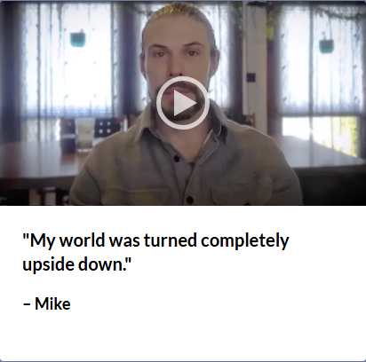
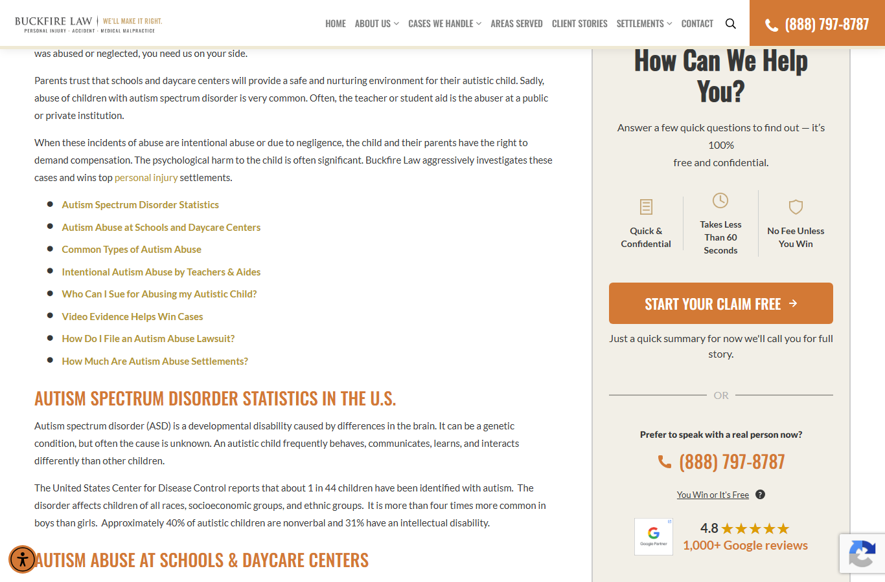
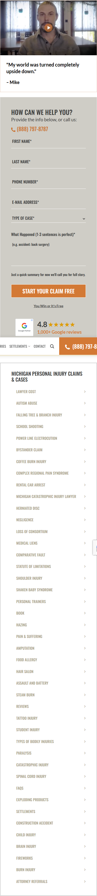

Buckfire Law · Test 24 · Case Type Pages: video testimonial
Convert exp 100053058 · V1 1000257876 / Control 1000257875 · QA 2026-11-11 · code under test va3.js / va3.css (byte-identical to the deployed Convert code)
Bugs
BUG-01: card is hidden for about half of visitors (the site's own quiz-form split)
The site runs a native A/B on the sidebar form: .bf-ab-quiz-form vs .bf-ab-original-form (the quiz arm rewrites the landing URL to ?bf_variant=quiz). .sidebar_form sits inside .bf-ab-original-form, so insertAdjacentHTML('beforebegin') on it (va3.js:188) puts the card inside that wrapper. When the visitor gets the quiz arm, the wrapper is display:none and the card is hidden with it.
Measured: card width 0 on 3 of 6 Chrome loads, 2 of 4 on a second run, and also on Safari/Firefox desktop. These visitors are still counted as V1 but never see the card or fire the video goal, which dilutes the result.
Fix: anchor above both form wrappers, not on the form itself, e.g. insert before #sidebar-main .bf-ab-quiz-form (or before form.closest('.bf-ab-original-form') || form, whichever comes first), so the card sits above whichever form is shown.
BUG-02: child pages show Denise instead of the parent case type's person, including the preview URL itself
Cre_24_urlVideoMap is an exact-pathname lookup (va3.js:114). Any child page misses and falls back to Cre_24_defaultVideoName = 'Denise'. The spec says "Case type and Location pages also include any child pages", and the Convert location uses "URL contains" on each parent, so child pages are in scope.
| Page | Expected | Got |
|---|---|---|
| /case-types/personal-injury/autism-abuse/ (the preview link) | Mike | Denise |
| /case-types/personal-injury/body/ | Mike | Denise |
| /case-types/product-liability/dangerous-toys/ | Alyssa | Denise |
| /case-types/slip-and-fall/airport/ | Sandra | Denise |
Fix: use a longest-prefix match: Object.keys(map).sort((a,b)=>b.length-a.length).find(k => path.indexOf(k) === 0).
BUG-03: no card at all on settlement-template child pages
Every /case-types/*/settlements/ page (template case-settlement-pages.php) has aside.blog-sidebar and .sidebar_form but no #sidebar-main. The selector #sidebar-main .sidebar_form never matches, so the card never renders. Measured on 8 of 11 case types: medical-malpractice, car-accidents, motorcycle, truck, dog-bite, cerebral-palsy, nursing-home, wrongful-death.
Fix: widen the selector to #sidebar-main .sidebar_form, .blog-sidebar .sidebar_form, or ask the client whether settlement pages are meant to be in scope.
BUG-04: old exp 100052509 is still active on the same pages, so two video cards stack
Exp 100052509 (the old single "Denise" testimonial card on case-type pages, location 100011764) is still active at 50/50. Forcing both experiments renders the old .testimonial-card and the new .buckfire-24-story-card in the same sidebar, and puts both BuckfireLaw_12 and BuckfireLaw_24 on the body. If it isn't paused, half of Test 24's control arm will also see a video testimonial, which contaminates the comparison.
Action: pause or archive 100052509 before Test 24 launches.
BUG-05: video can't be started by keyboard
.buckfire-24-play-button is a bare <div> (tabIndex −1, no role or label), and native controls only appear after the first click. This fails WCAG 2.1.1 and 4.1.2. It's the same issue that was open on Test 12 (BUG-03) and exp 100052509. Fix: use <button type="button" aria-label="Play Mike's story">.
Question for the client
The play button doesn't match the Test 12 play button
The ticket asks to "lighten the play button over the person's face" and to keep the design consistent with the other tests. The build follows the Figma: a 34px orange disc at 60% opacity. The live Test 12 carousel (PPC pages and homepage) uses a 60px transparent white ring. The quote and name typography do match Test 12 exactly (Lato 20px/700, 18px/600). Which play button should be the standard?

Evidence


What works
| Check | Chrome desk | Pixel 5 | iPhone 12 | Firefox / Safari desk |
|---|---|---|---|---|
| Card above the form, same width as the form | ✓ | ✓ | ✓ | ✓ when original-form arm (BUG-01) |
| Poster loads, ratio 415:233, lazy (no src, preload=none, playsinline) | ✓ | ✓ | ✓ | ✓ |
| Click → video decodes and plays, poster/button hidden, controls shown | ✓ | ✓ | ✓ | blocked by BUG-01 in run |
Goal 100038435 fires once on playing, not again on resume | ✓ | ✓ | ✓ | n/a |
| Correct person on the preview URL | ✗ BUG-02 | ✗ | ✗ | ✗ |
| Keyboard-operable | ✗ BUG-05 | ✗ | ✗ | ✗ |
| No page errors from the variation | ✓ | ✓ | ✓ | ✓ |
- All 11 parent case-type pages show the person from the client sheet, including the new Sandra video on slip-and-fall.
- All 16 CDN assets (8 mp4 + 8 webp) return 206. Videos are 19–25 MB but load only on click.
- Control renders nothing. Out-of-scope page (
/reviews/) is untouched. Body classBuckfireLaw_24is unique (no name collision this time). - The card has no headline, unlike the Figma ("Buckfire has a heart for their clients"). This matches live Test 12, which also hides its headline, so it's consistent and I'm not raising it as a bug.
Launch notes
- Audience
10007176is currently QA-only (cro_mode=qacookie/param). Switch it to "All users" per the ticket at launch. - Console noise (
trigger is not defined,$ is not a function,Unexpected token '?') also appears on control and 100052509-only loads. It comes from other scripts, not Test 24.